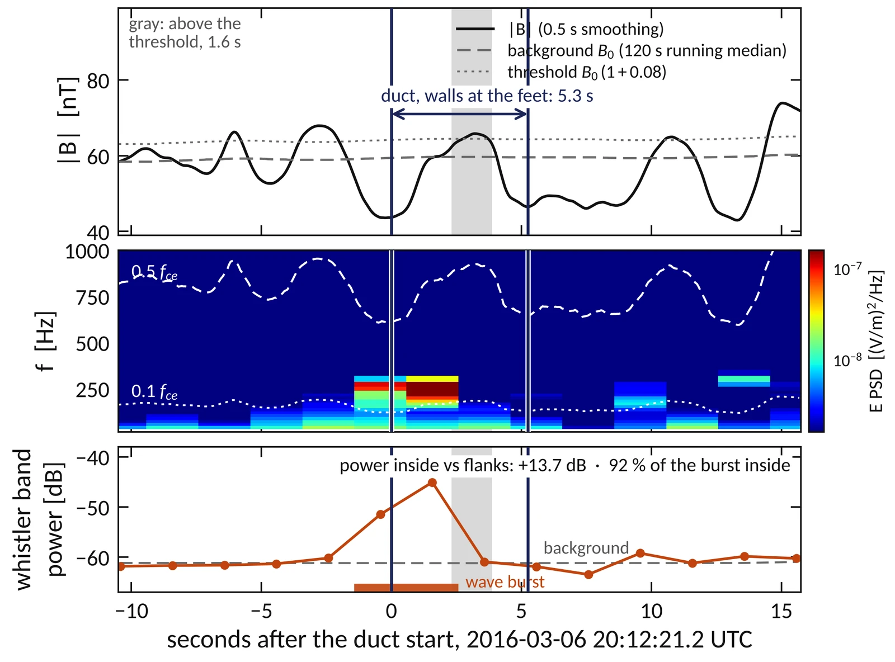
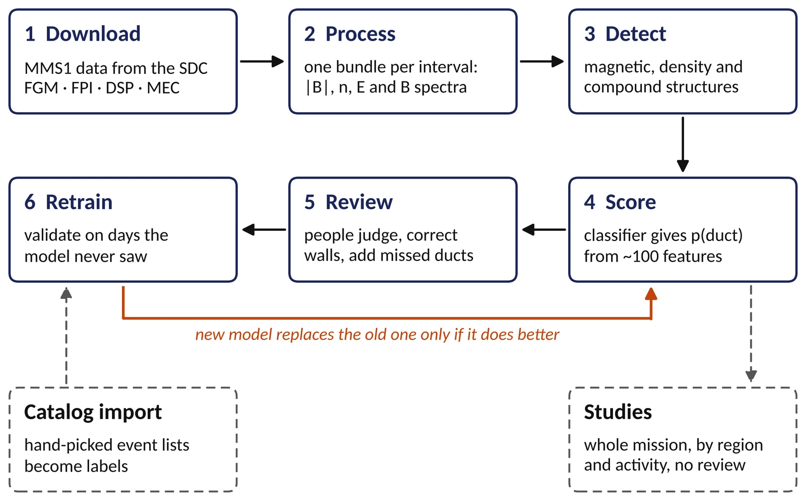
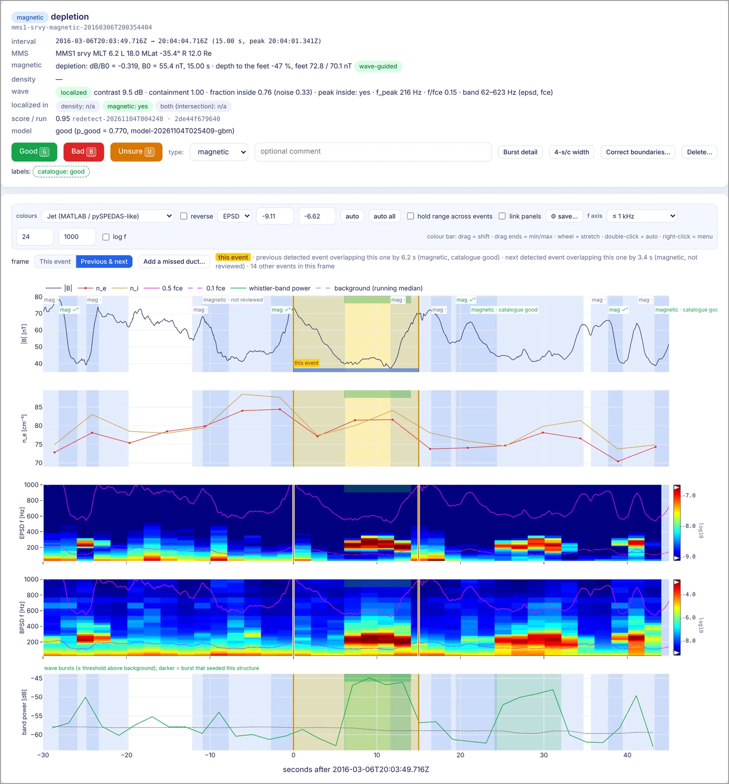
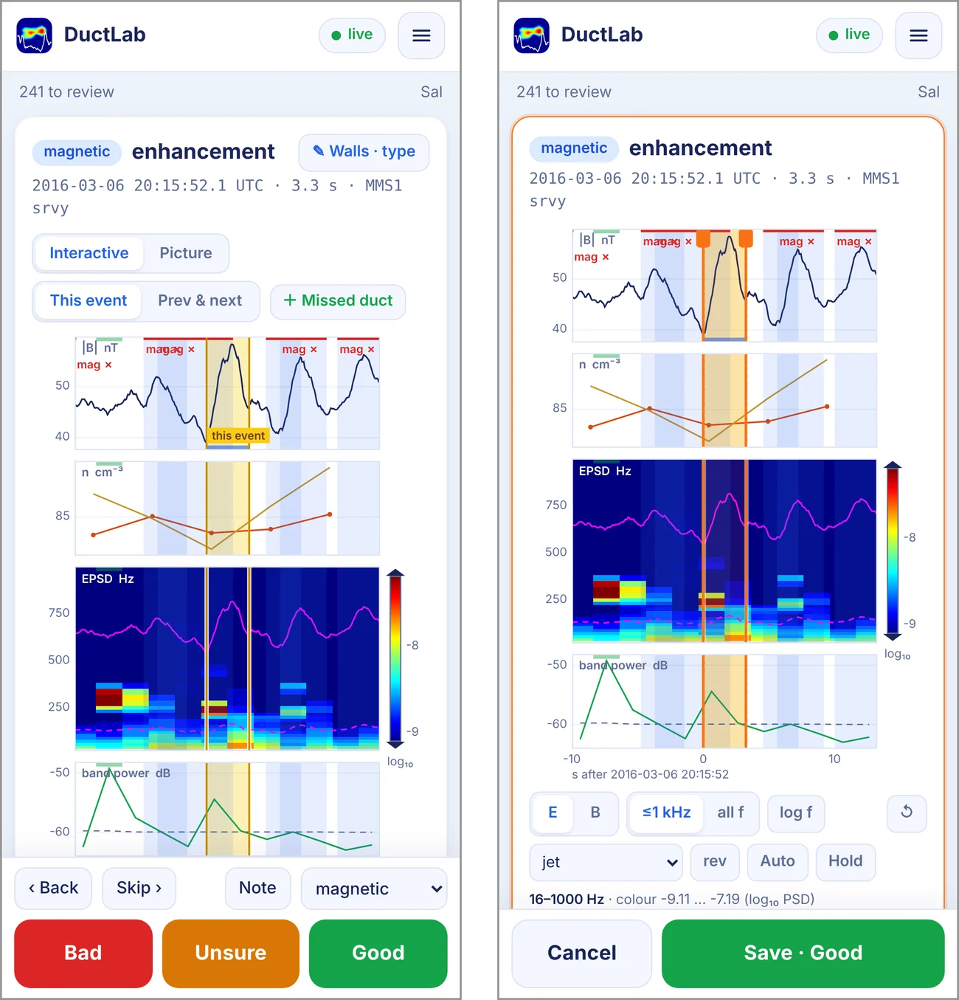

What is a duct?
A duct is a field-aligned region where the plasma density or magnetic field magnitude is higher or lower than the background. Under certain conditions, these structures can trap whistler-mode waves and guide them along the magnetic field. This can affect where the waves interact with energetic electrons.
Ducts are usually found by looking at the magnetic field, electron density and wave spectra together. Doing this manually for years of MMS data takes a lot of time. This is why DuctLab was developed.
Event detection
DuctLab searches for ducts in two ways. First, it looks for enhancements and depletions in |B| and electron density relative to a local background. Second, it finds bursts of whistler-band wave power and looks for a corresponding structure in the magnetic field or density. If both structures are present, the event is kept as a compound duct candidate.
The boundaries are placed where the profile flattens out near the base of the structure, not at the threshold crossings. For each event, the program measures the field and density perturbations, profile shape, wave power inside and outside the duct, the fraction of the wave burst inside the duct, and the wave frequency relative to the local electron cyclotron frequency.
The detector works with enhancements and depletions in survey and burst data from all four MMS spacecraft.

Machine learning
The detector finds many candidates, and not all of them are ducts. DuctLab uses supervised machine learning to help separate the two. The model estimates the probability of each candidate being a duct, based on the events that have already been reviewed. As more events are labeled, a new model can be trained.
Physical features
For each candidate, DuctLab calculates about 100 features from the MMS data. These include the amplitude of the magnetic field and density perturbations, duration, profile shape, background plasma conditions, wave localization and frequency. DuctLab currently uses a calibrated gradient-boosted tree model to estimate the duct probability and a separate model to predict the duct type.
As shown in Figure 2, wave localization and magnetic structure account for about 41% and 40% of the current model’s feature importance. These are also two of the main things reviewers look at in an event. The percentages describe the model, not the physical importance of each quantity, and may change with further training.
Show as a table
| Feature group | Examples | Share |
|---|---|---|
| Wave localization | wave-power contrast, containment, burst fraction | 41.1% |
| Magnetic structure | amplitude, depth, asymmetry, boundary gradients | 40.1% |
| Background levels | B₀, n₀ and the electron cyclotron frequency | 10.0% |
| Magnetic profile | the shape of |B| across the duct | 5.4% |
| Wave frequency | peak frequency, f/fᴄₑ, bandwidth | 1.5% |
| Eight other groups | type flags, density, duration, detector score… | 2.0% |
Machine-learning models
DuctLab includes five types of machine-learning models. They are trained and tested on the same labeled events and data splits, so their performance can be compared. Other models can be added as Python plug-ins.
| Model | Input | Purpose |
|---|---|---|
| Gradient-boosted trees (default) | About 100 physical features | Default model; works with limited labels and missing values |
| Random forest | The same physical features | Used for comparison with boosted trees |
| Profile neural network | Profiles of δB/B₀, δn/n₀ and whistler-band power, together with physical features | Learns from the shapes of the profiles |
| 1-D convolutional network (PyTorch) | The same time-dependent profiles | For larger sets of labeled events |
| Ensemble | Tree-based and neural-network predictions | Combines predictions from both models |
| Plug-ins | User-defined inputs | New models can be added as Python files |
A separate classifier trained on confirmed ducts predicts whether a candidate is magnetic, density or compound.
Training the models
Once the detector finds an event, the program calculates its features and the model assigns a probability. Events with the most uncertain predictions are reviewed first. When enough new labels are available, DuctLab trains and tests a new model. It replaces the current one only if it performs better on data neither model has seen.
Reviewers can also change the duct type, move the boundaries or add events the detector has missed. If the boundaries change, DuctLab calculates the features again before training.
Existing catalogs can also be imported to train the first model. Matching detections are labeled as ducts. Candidates far from the cataloged events can be used as provisional negative examples, although an incomplete catalog may have missed some ducts.

Model validation
Events observed on the same day may have similar plasma conditions and wave properties. To avoid putting similar events in both training and validation, the data are split by day, not by individual event. About 20% of the labeled days are reserved for validation.
The new and current models are compared on events that neither has seen during training. If their performance is similar, the better-calibrated model is chosen. The classification threshold is set by cross-validation.
Missing data can also affect training. For example, the model may learn that missing wave data means an event is not a duct. DuctLab checks whether features are missing more often in one class than the other. Events without the necessary wave data are left unlabeled.
The settings and results of each training run are saved, along with the model, so earlier versions can be compared or reused.
Reviewing events
Reviewers check the detected events and label them Good, Bad or Unsure. They can correct the boundaries and add any ducts the detector missed. DuctLab also has a phone app, so events can be reviewed without sitting at a computer.

- Label an event Good (G), Bad (B) or Unsure (U), select its type and add a comment.
- The model’s probability and predicted duct type.
- Move the duct boundaries on any panel. The program recalculates the features.
- Previous and next detections in the same time interval.
- Electric and magnetic field spectra with adjustable color and frequency scales.

Reviewing as a team
Several people can review events at the same time. Each reviewer has a separate account and can see only their own labels. An event is reserved for 30 minutes during online review, or eight hours for offline review, to avoid assigning it to two people at the same time.
The software
DuctLab is a Python application that downloads MMS data, detects and displays events, and trains the machine-learning models.
The entire project is in one folder and can be kept on an external drive. The launcher sets up the Python environment on macOS, Windows or Linux. The app runs in its own window or in a browser.
The program downloads magnetic field, plasma, wave and orbit data from the MMS Science Data Center using pySPEDAS. It can run on a local computer or a Linux server. With the server running, events can be reviewed and labeled from a computer or phone anywhere.
New versions are shared through a private GitHub repository. Installations update automatically, and everyone uses the same analysis settings. The code has 155 automated tests, including tests of the review screens.
DuctLab is built with Python, NumPy, SciPy, pandas, scikit-learn, PyTorch, pySPEDAS, Flask, Plotly.js and SQLite.
Research goals
The goal is to build a catalog of magnetic and density ducts across the MMS mission to study the propagation of whistler-mode waves.
The main questions are where different types of ducts occur in the magnetosphere, what their physical properties are, and how they depend on the local plasma conditions and geomagnetic activity.
Other goals are to study the relationship between duct properties and wave localization, select events for numerical simulations, and investigate the role of ducted whistler-mode waves in wave-particle interactions.
Status and contact
DuctLab is still in development. The current version is 0.8.8 (November 2026).
The code and project data are private for now. Current work focuses on expanding the catalog and improving the detection and classification methods.
If you are working on similar problems, would like to try DuctLab on your own events, or are interested in helping with the event review, please get in touch.